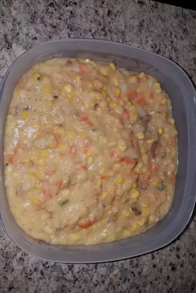

Mashed Potatoes

Description
Quick, easy and delicious mashed potatoes with corn and carrots.
Ingredients
- 1 lb red potatoes
- 1 lb Yukon Gold potatoes
- 1 fresh jalapeno pepper, sliced
- 12 oz baby carrots
- 4 cloves garlic
- 10 oz frozen white corn, thawed
- 1/4 cup butter
- 1/2 cup shredded Cheddar cheese
- salt and pepper to taste
Steps
- Place red potatoes, yellow potatoes, jalapeno pepper, carrots and garlic cloves in a large pot. Cover with water, and bring to a boil over high heat. Cook 15 to 20 minutes, or until potatoes are tender. Drain water from pot.
- Stir in corn and butter. Mash the mixture with a potato masher until butter is melted and potatoes have reached desired consistency. Mix in cheese, salt, and pepper. Serve hot.